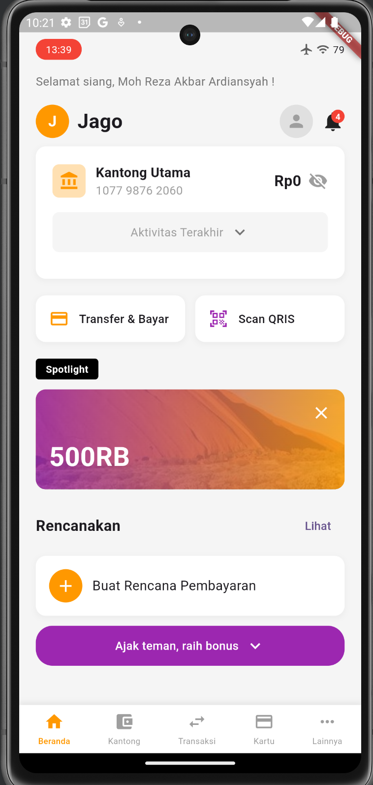
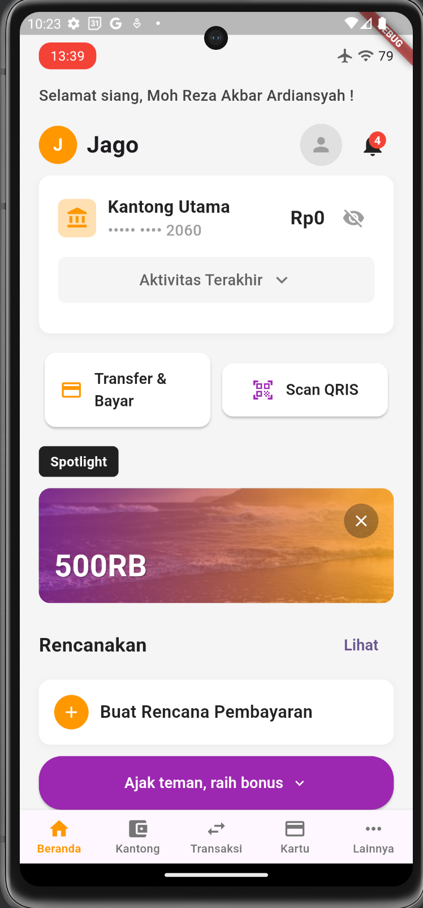

Accessibility in Flutter Workshop
Presented by Angga Arifandi August 2025
Hello There

I'm Angga Arifandi. Software Engineer, ING Netherlands. Google Dev Expert in Flutter
Workshop Agenda
- Part 1: Foundations of Accessibility in Flutter (30-45 min)
- Break (10 minutes)
- Part 2: Interactive Case Study (60 min)
- Break (10 minutes)
- Part 3: Scaling Accessibility in Large Codebases (60 min)
- Q&A: Questions and Closing
Part 1
Foundations of Accessibility (+ in Flutter)
WCAG Principles - POUR
- 📱 Perceivable Information must be presentable to users in ways they can perceive
- ⚡ Operable User interface components must be operable
- 🧠 Understandable Information and UI operation must be understandable
- 🔧 Robust Content must be robust enough for various assistive technologies
Flutter's Accessibility Features
- 🔤 Large font support across platforms
- 📢 Screen reader compatibility (TalkBack, VoiceOver)
- 🎨 Color contrast guidelines
- 🏷️ Semantic role assignment for custom widgets
- 🎯 Focus management and keyboard navigation
- ✋ Accessible gesture alternatives
🔤 Large font support across platforms
Explanation & example
📢 Screen reader compatibility (TalkBack, VoiceOver)
Explanation & example
🎨 Color contrast guidelines
Explanation & example
🏷️ Semantic role assignment for custom widgets
Explanation & example
🎯 Focus management and keyboard navigation
Explanation & example
✋ Accessible gesture alternatives
Explanation & example
Automatic Accessibility
- ✅ Standard Flutter widgets generate accessibility trees automatically
-
⚙️ Semantic roles can be explicitly defined using
Semanticswidget - 🧪 Testing tools available via Accessibility Guideline API
✅ Standard Flutter widgets generate accessibility trees automatically
Explanation & example
⚙️ Semantic roles can be explicitly defined using Semantics widget
Provides additional information about widgets to assistive technologies
Semantics(
label: 'Submit button',
hint: 'Tap this button to submit the form',
child: ElevatedButton(
onPressed: () {
// Submit logic
},
child: Text('Submit'),
),
)
Key Semantic Properties
- label: Describes what the widget is
- hint: Describes what happens when interacting
- value: Current value (for input fields, sliders)
- excludeSemantics: Hide decorative elements
- button: Mark as interactive button
- header: Mark as heading
🧪 Testing tools available via Accessibility Guideline API
Explanation & example
Focus & Keyboard Navigation
Key Use Cases:
- 🪟 Modal presentation - Move focus to modal content
- 🔀 Screen navigation - Direct focus to specific elements
- 📋 Form validation - Focus on error fields
💡 Tip: Programmatically managing focus ensures smooth navigation for assistive technologies
Accessible Gestures
🎯 Core Principle:
"Gesture activated functionality should also be available without the use of gestures."
Implementation:
- ✋ Provide alternative interaction methods
- 🚫 Allow users to cancel accidental interactions
- 🔄 Support motion alternatives for motion-activated actions
- 📝 Provide clear input instructions
Accessibility Testing in Flutter Checklist
- ✅ Interactive elements have meaningful actions
- ✅ Test with screen readers (TalkBack, VoiceOver)
- ✅ Verify sufficient color contrast
- ✅ Tappable targets are at least 48x48 pixels
- ✅ Support context preservation during interactions
- ✅ Enable undo actions for important operations
- ✅ Test with large fonts enabled
(Optional) Show example using a simple Flutter app
Exaplanation and Example
☕ Break Time
10 Minutes
Get some coffee, stretch, and we'll continue with Part 2!
Part 2
Interactive Case Study
App for case study -> Before
App for case study -> After
App for case study -> To discuss (To be done)
- Grouping
- Use Flutter widgets
- Missing Semantic Labels and Descriptions
- Inaccessible Interactive Elements
- Poor Color Contrast
- Missing Focus Management
- Insufficient Touch Target Sizes
- Tests
☕ Break Time
10 Minutes
Another quick break before our final section!
Part 3
Scaling Accessibility in Large Codebases
Topics to Cover... (To be done)
- Use Flutter original widgets underneath, as much as possible
- Create good components
- Page scaffolding
- Guideline and documentation
- Testing
- Use AI help
Questions?
Thank you for attending the Accessibility in Flutter workshop!
Remember: Accessibility is not a feature, it's a responsibility. ☺️
Thank You!
Building inclusive apps together 🚀
P.S. See you when I see you, and good luck! 🔥🔥🔥